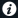
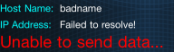
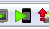

UDN
Search public documentation:
UDKRemoteCH
English Translation
日本語訳
한국어
Interested in the Unreal Engine?
Visit the Unreal Technology site.
Looking for jobs and company info?
Check out the Epic games site.
Questions about support via UDN?
Contact the UDN Staff
日本語訳
한국어
Interested in the Unreal Engine?
Visit the Unreal Technology site.
Looking for jobs and company info?
Check out the Epic games site.
Questions about support via UDN?
Contact the UDN Staff
UDK Remote
概述
安装
设置
网络
UDK Remote使用网络和您的PC进行通信，所以您需要在您的iOS设备上设置Wifi和您的PC在同一个网络上。如果需要，可以联系您的网络管理员来解决这个问题。UDK Remote设置
当您第一次运行UDK Remote时，将会直接带您进入到设置屏幕： (否则，简单地点击i按钮
(否则，简单地点击i按钮 
来进行设置)。 点击第一个设置行来输入您的PC的名称或地址： 当您第一次选择一个计算机时，它将自动地提示您输入您的计算机的网络名或IP地址。输入计算机名称(比如，mycomputer或mycomputer.company.net)或您的PC的IP地址(比如，192.168.0.34)。点击确认，然后或者点击顶部的Settings（设置）按钮或者点击列表中的计算机名称。
此时，一切都设置好了，所以点击顶部的Done（完成）来返回到UDK Remote主屏幕：
当您第一次选择一个计算机时，它将自动地提示您输入您的计算机的网络名或IP地址。输入计算机名称(比如，mycomputer或mycomputer.company.net)或您的PC的IP地址(比如，192.168.0.34)。点击确认，然后或者点击顶部的Settings（设置）按钮或者点击列表中的计算机名称。
此时，一切都设置好了，所以点击顶部的Done（完成）来返回到UDK Remote主屏幕：
 如果您输入了网络名称(而不是IP地址)，那么它将尝试把那个名称解析为IP地址。您可以在左下方看到结果：
如果您输入了网络名称(而不是IP地址)，那么它将尝试把那个名称解析为IP地址。您可以在左下方看到结果：
 如果它不能找到网络名称，它将会告诉您这个信息：
如果它不能找到网络名称，它将会告诉您这个信息：

此时，您需要通过i按钮跳转回到设置部分，并添加新的计算机名称。在设置屏幕上，再次点击顶部行并输入计算机选择模式，然后点击+按钮来添加新的计算机。您可以使用Edit(编辑)来删除旧的或坏的计算机。 注意: 如果您输入的是IP地址，那么应用程序将会尝试解析这个地址，以确保它可以连接。UDK Remote使用无连接模式，当使用IP地址时，目前没有关于UDK Remote可以发送数据给PC的暗示。PC设置
为了在PC上使用多点触摸和倾斜信息，您应该在 Mobile Previewer(移动设备预览器)模式中运行您的UDK游戏。这可以使用以下两种方式之一完成。在虚幻编辑器中，点击Mobile Previewer(移动设备预览器)按钮：
或者，可替换地，您可以使用-simmobile命令行参数运行游戏。这将会启用渲染模拟和输入模拟。如果您想使用正常的PC渲染(使用Direct3D)，当您在运行游戏时在命令行中使用-simmobileinput 开关，您将仍然可以从UDK Remote接收输入。